Vanderbilt · Anchor's Edge · ATD facilitator guide · print edition
The Growth Record, the facilitator guide

Run of show
| Screen | Full (min) | Core (min) |
|---|---|---|
| Welcome / QR | 2 | 1 |
| The mission | 2 | 1 |
| The goal we are targeting | 2 | 1 |
| Objectives | 1 | 1 |
| Agenda | 1 | skip |
| Why the record matters | 8 | 6 |
| What goes where | 10 | 7 |
| Write the entry | 9 | 6 |
| The core idea | 1 | skip |
| Recap quiz | 4 | 3 |
| Capstone commitment | 4 | 3 |
| Closing | 1 | 1 |
| Total | 45 | 30 |
The goal this month serves
Goal 2, Manager Effectiveness at Scale. Baseline 15%, Q4 target 80%.
Audience
All Vanderbilt staff in the Anchor's Edge weekly rhythm; no one is assumed to manage people. Works for 6 to 40 on a call; breakouts run in pairs. No prerequisites; February is the Coaching as the Core Manager Behavior month, and this session gives every staff member the system side of it.
Room setup
Virtual, instructor led: camera on, deck link in chat, breakouts of 2 available. Learners follow on their own screens via the welcome-slide link or QR. Nothing typed into the deck is saved or sent.
Materials
- Meeting platform with screen share and breakout rooms; deck link ready to paste in chat
- Facilitator machine with the facilitator edition open; notifications off
- Learners on their own devices with the learner link
- Chat open for share-outs; the capstone copy button pastes there cleanly
A week before
- Run the learner edition start to finish and do every interaction honestly; you will demo at least one live.
- Read this month's theme page on the Anchor's Edge dashboard so the goal tie-in is fluent.
- Send the invite with the learner link and one line on what to bring.
The day before
- Test screen share with the facilitator edition; confirm the notes rail is readable.
- Open the learner link on a second device; the QR must land there.
- Run the section interactions once so you can drive them without reading.
30 minutes before
- Welcome slide up as people join; link pasted in chat.
- Close every other tab; silence the machine.
- Breakout rooms pre-configured in pairs.
When things go sideways
If Screen share or the site fails mid-session: Paste the learner link in chat and narrate from your own browser; every interaction runs on learner devices without the share.
If Breakout rooms are unavailable: Run the breakout prompts as 60-second chat storms: everyone types their answer at once, you read the best three aloud.
If Someone says their manager never looks at the system: True sometimes, and the record still works: talent reviews, project staffing, and internal recruiters search it whether or not one manager does. Write for the readers you cannot see.
If Someone starts typing a real colleague's private situation into chat as an example: Redirect immediately and warmly: 'Roles, never names, and other people's private business stays unwritten, here included.' Then restate the three-shelf sort.
Tough questions, ready answers
Q: Who can actually see what I enter in the system?
Your manager and the talent teams who run reviews and staffing; each field shows its visibility if you are unsure. The working rule keeps you safe either way: write every visible entry as if a future hiring manager will read it, because the useful ones will.
Q: What if my goal is to move away from my current team?
Mobility goals are legitimate; internal movement is exactly what the record supports. Frame the direction rather than the departure: 'grow toward project leadership' works on the record, and the specifics stay in conversations you choose to have.
Q: I'm not a manager, so is the coaching month really for me?
Yes. Coaching is two-sided: managers are learning to ask this month, and a visible record gives them something real to ask about. Written goals make you easy to coach and easy to advocate for, whoever you report to.
Copy-paste templates
Pre-work invite (paste into the calendar invite)
Subject: Tuesday, 45 minutes to put your growth on the record. Bring one career goal you have never written down, and your talent system login if you have it handy. Live and interactive; have the session link open on your own screen.
7-day pulse (send one week after)
Subject: Is it in the system? Three lines, reply whenever: 1) Is your development goal in the system? 2) Did you note your last career conversation? 3) What did writing it down make clearer?
After the session
Seven days out, send the pulse: 'Is your development goal in the system? Did you note your last career conversation? What did writing it down make clearer?' Count of new system goals is the month's adoption signal for the record.
Welcome / QR Full 2 min · Core 1
Get everyone into the deck on their own screen and set the tone: 45 minutes, live, hands on.
Say
“Welcome to Take-Off Tuesday. Scan the code or click the link in chat so this session runs on your screen too. Forty-five minutes, one focus: Capturing your development goals and career-conversation notes in the system.”
Do
- Slide up as people join; link pasted in chat every few minutes.
- State the norm once: type into your own screen, nothing you enter is saved or sent.
Watch for: People lurking without the deck open. The interactions only land if the deck is on their screen.
Transition: “Before the topic, thirty seconds on why Vanderbilt is asking for this hour.”
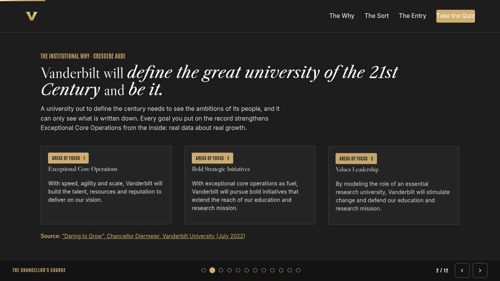
The mission Full 2 min · Core 1
Anchor the session in the Chancellor's charge so the next 40 minutes read as mission work, not admin.
Say
“This year of learning hangs off one sentence from the Chancellor: Vanderbilt will define the great university of the 21st Century and be it. A university out to define the century needs to see the ambitions of its people, and it can only see what is written down. Every goal you put on the record strengthens Exceptional Core Operations from the inside: real data about real growth.”
Do
- Read the mission line slowly, once.
- Point at the tie-in line and let it sit; no discussion needed here.
Transition: “That is the why. Here is the number we are moving.”
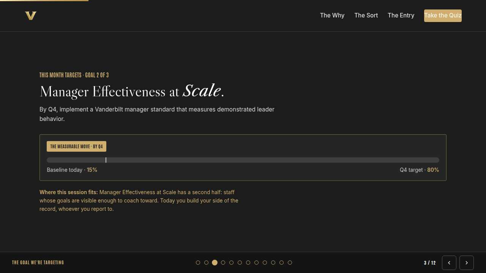
The goal we are targeting Full 2 min · Core 1
Name the enterprise goal this month serves and the measurable move it needs.
Say
“Every month of Anchor's Edge lands on one of three enterprise goals. This month is Goal 2, Manager Effectiveness at Scale: By Q4, implement a Vanderbilt manager standard that measures demonstrated leader behavior. Today's baseline is 15%; the Q4 target is 80%. Manager Effectiveness at Scale has a second half: staff whose goals are visible enough to coach toward. Today you build your side of the record, whoever you report to.”
Do
- Let the meter animate before you speak to the number.
- One line, not a lecture: this session is one of the moves that closes the gap.
Transition: “Here is what you will be able to do in 45 minutes.”
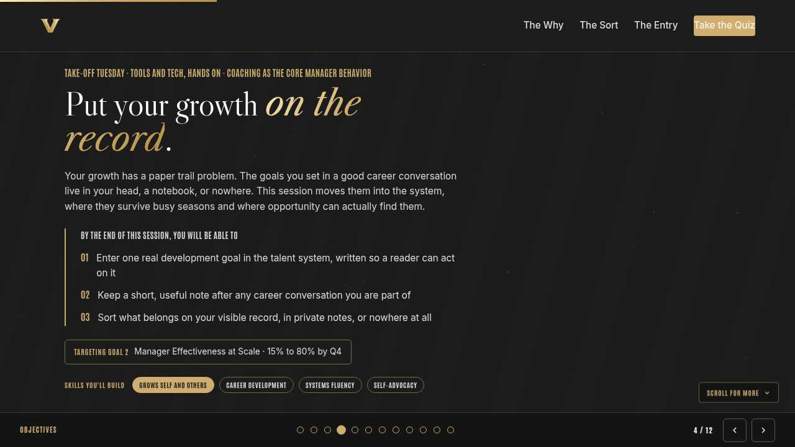
Objectives Full 1 min · Core 1
Set the contract for the session in under a minute.
Say
“By the end of this session: enter one real development goal in the talent system, written so a reader can act on it; keep a short, useful note after any career conversation you are part of; sort what belongs on your visible record, in private notes, or nowhere at all. That is the whole contract.”
Do
- Read the three objectives briskly; do not elaborate yet.
Transition: “Three stops to get there.”
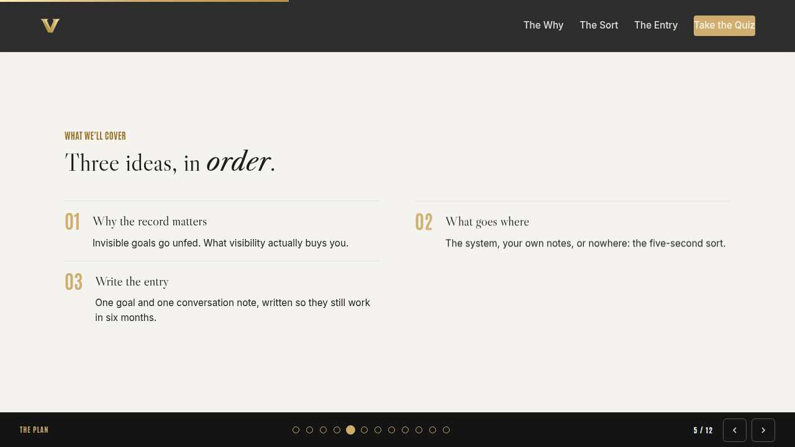
Agenda Full 1 min · Core skip
Show the path so the room can pace itself.
Say
“Three stops: why the record matters, what goes where, write the entry. Each one has something to play with, so keep the deck open.”
Do
- Point once at each stop; ten seconds each.
Transition: “Stop one.”
Core path: Core: skip the read-through, gesture at the slide in passing.
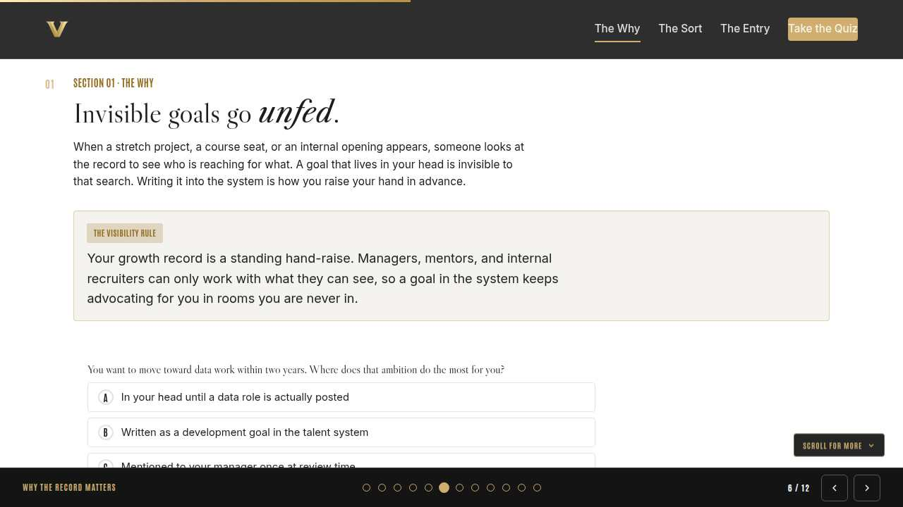
Why the record matters Full 8 min · Core 6
Establish visibility as the point: goals in the system keep working when you are out of the room.
Say
“Quick show of hands in chat: how many of you have a career goal that exists nowhere in writing? That is normal, and it has a cost. When stretch projects, course seats, and internal openings get decided, someone is looking at a record. If your goal lives in your head, you are invisible to that search. Writing it down is how you raise your hand in rooms you are not in.”
Do
- Run the chat show of hands first; the count of unwritten goals is the hook.
- Read the visibility rule from the card once, then run the check on everyone's own screen.
- Run the breakout on the goal that exists nowhere in writing.
Ask
“What has kept your goal out of the system so far?”
Expect:
- Never thought of the system as mine to use
- Feels presumptuous or too exposed
- It reads like HR paperwork, so it never felt urgent
Respond: All common. Today reframes the record as a tool you point at your own future, and the sort in the next section handles the exposure worry directly.
Debrief: Visible goals get fed; invisible ones wait. The record is a standing hand-raise.
Watch for: Staff who assume this is a managers-only tool. Say it plainly: every field in this session is yours, whoever you report to.
Transition: “So some things go on the record. The next skill is knowing what does.”
Core path: Core: skip the breakout; take the unwritten-goal count from chat and move.
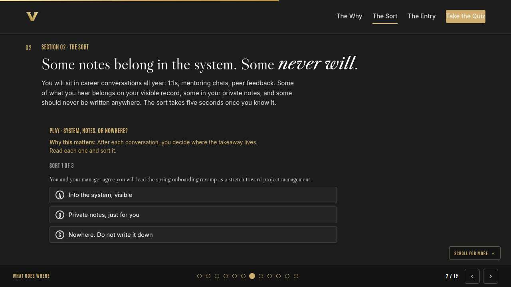
What goes where Full 10 min · Core 7
Install the three-shelf sort: visible record, private notes, or never written.
Say
“You will be in career conversations all year, your own and other people's. The sort has three shelves. Your goals and agreed actions go in the system, visible. Your raw self-observations go in your private notes, because honesty needs a little privacy while it is fresh. And other people's private business goes nowhere, ever. Five seconds of sorting protects you and everyone around you.”
Do
- Run System, notes, or nowhere? live; everyone sorts on their own screen.
- Pause after round three; let the 'write nothing' answer breathe before you move.
- Run the breakout: one thing for the visible record, one for private notes.
Ask
“Why does round three, the colleague's health situation, get 'write nothing' rather than private notes?”
Expect:
- It is theirs to tell, never mine to store
- Notes get seen, forwarded, or found
- Writing it down would change how I treat them
Respond: All of it. Your private notes are for your own growth. Other people's disclosures are held in trust, and trust does not have a text field.
Debrief: Yours and agreed goes visible. Yours and raw stays private. Theirs and private goes unwritten.
Watch for: The quiet worry that the visible record gets used against people. Name it: the record is for growth and mobility, and section three shows how to write entries you would be glad to have read.
Transition: “You know what goes in. Now we make what goes in worth reading.”
Core path: Core: run the trainer, skip the breakout, take one sort question from chat.
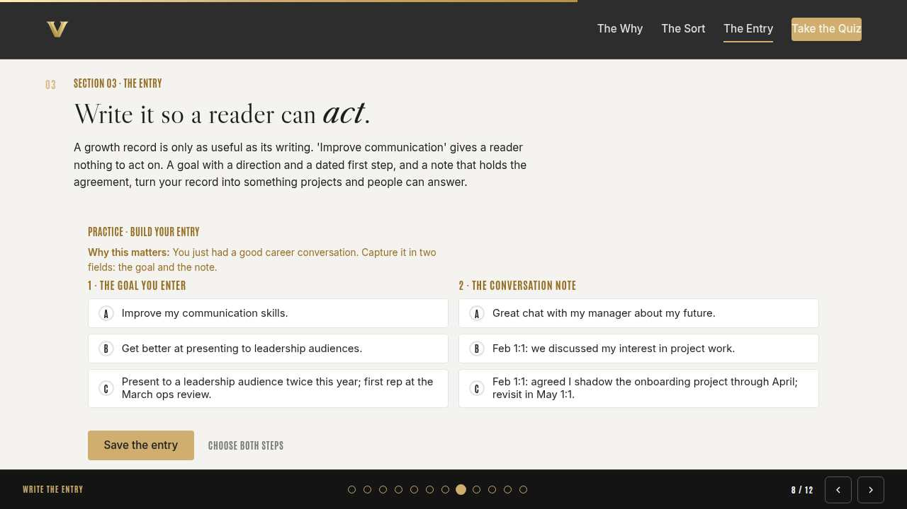
Write the entry Full 9 min · Core 6
Turn goals and notes into entries a future reader can act on: direction, date, agreement, follow-up.
Say
“The system rewards a particular kind of writing, and it is teachable in one line: write so a reader can act. 'Improve communication' gives a reader nothing. 'Present to a leadership audience twice this year, first rep at the March ops review' gives them everything: what you want, when it starts, how to help. Same with notes. Date, agreement, follow-up, and the note runs your next conversation for you.”
Do
- Run Build your entry; two minutes for both fields, then save it.
- Ask one volunteer to read their six-months-later outcome aloud.
- Point at the pattern: direction plus dated step for goals; date plus agreement plus follow-up for notes.
Ask
“What makes 'improve my communication skills' so common and so useless?”
Expect:
- It is safe and cannot be wrong
- It came off a review form, never from a real want
- Nobody ever taught goal-writing
Respond: Safe is the problem: it is a goal nothing can respond to. Specific goals feel exposed for a week and get fed for a year.
Debrief: Write for the reader who wants to help you. A direction, a dated first step, and notes that hold the agreement.
Watch for: Perfectionism stalling the entry. A rough goal in the system beats a polished one in your head, and it can be edited forever.
Transition: “Quick recap, then you draft the real entry.”
Core path: Core: everyone builds solo; skip the read-aloud.
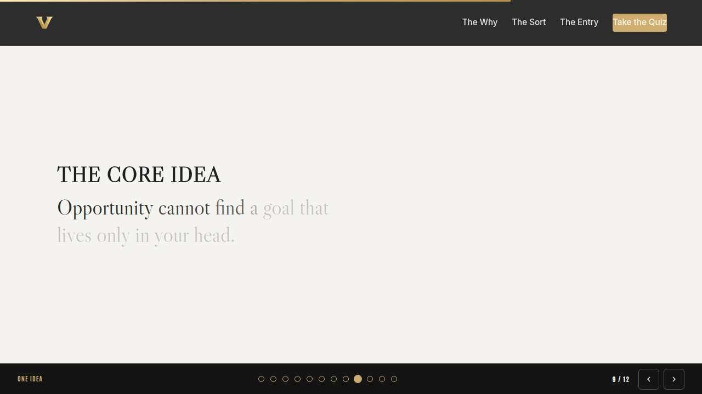
The core idea Full 1 min · Core skip
Land the one sentence the session exists to install.
Say
“If you keep one sentence from today, this is it. Read it once, out loud: Opportunity cannot find a goal that lives only in your head.”
Do
- Pause two beats after reading; the word animation carries it.
Transition: “The recap makes it stick.”
Core path: Core: pass through in stride; the sentence reads itself.
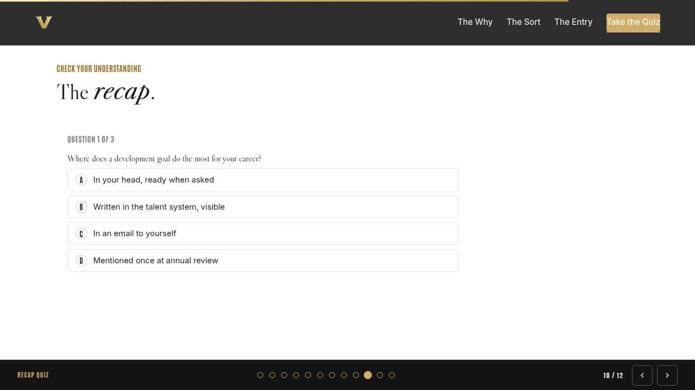
Recap quiz Full 4 min · Core 3
Score the learning while it is fresh; wrong answers are teaching moments, not failures.
Say
“Three questions, on your own screen. Answer honestly; the explanations are where the learning sticks.”
Do
- Give the room 90 seconds to run it individually.
- Ask for a show of results in chat: how many got 3 of 3?
- Read out the explanation for whichever question drew the most misses.
Watch for: Rushing past the why lines. The explanations carry the teaching.
Transition: “Now point it at your real week.”
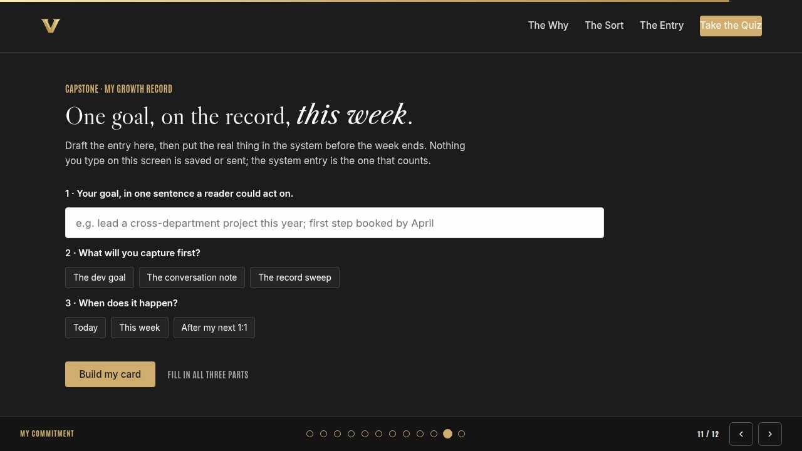
Capstone commitment Full 4 min · Core 3
Convert the session into one named, dated action per person.
Say
“Now draft the real thing. One development goal, written so a reader could act on it, and pick when it goes into the system. The card is your draft; the system entry this week is the actual capstone. Two minutes, quiet, go.”
Do
- Two quiet minutes; everyone builds their own card.
- Invite two or three volunteers to read their card aloud or paste it in chat.
- Remind: copy the card somewhere you will see it this week.
Watch for: Vague entries. Nudge for a name-able situation and a real date.
Transition: “Last slide.”
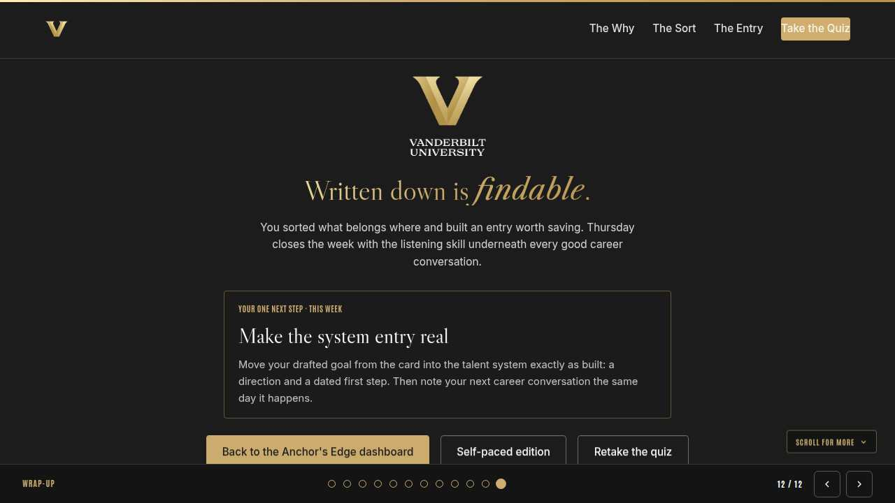
Closing Full 1 min · Core 1
End with the next step and where this thread continues.
Say
“Your card is a draft; the entry in the system is the real finish line, so get it there this week. Thursday's Thrive Thursday closes the coaching week with the skill underneath every conversation you will ever capture: empathy, hearing what isn't said. And if you are working through this month's LinkedIn Learning pick, Sara Canaday's Coaching Skills for Leaders and Managers, the note habit you built today is exactly where the navigator-led GROW practicum conversations belong.”
Do
- Point at the next-step card; one sentence.
- Name the rest of the week's rhythm: the other sessions echo this month's theme.
Generated from facilitator/notes.json. The on-screen facilitator edition lives at ./ alongside this guide.